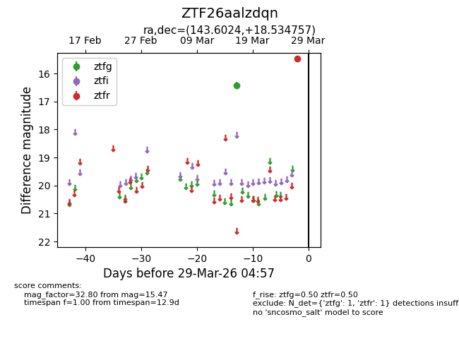
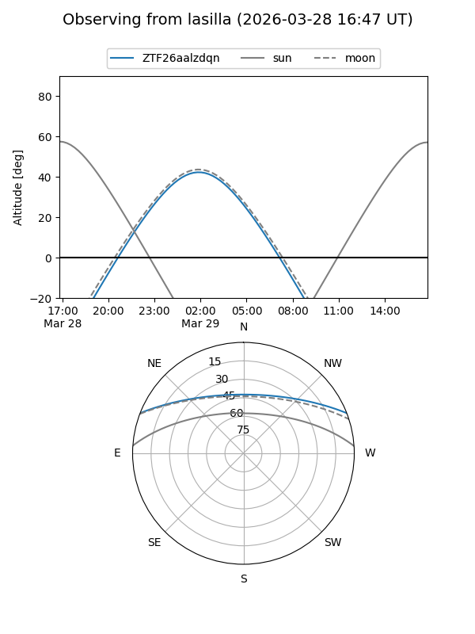
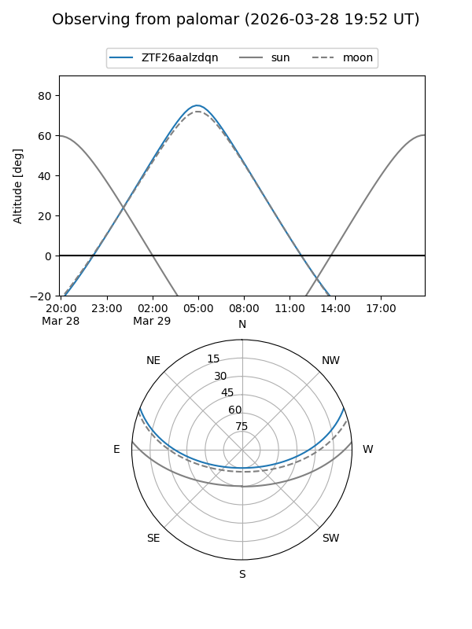

ZTF26aalzdqn
Target ZTF26aalzdqn at 2026-03-29 05:00
Aliases and brokers:
FINK: link
Lasair: link
ALeRCE: link
alt names
ZTF26aalzdqn (ztf,fink_ztf)
Coordinates:
equatorial (ra, dec) = 143.6024,+18.53476
equatorial (HMS+DMS) = 09:34:24.57,+18:32:05.12
galactic (l, b) = (212.8729,+44.08176)
Flags:
Photometry:
last ztfg=16.42, ztfr=15.47
1 ztfg, 1 ztfr detections
Lightcurve

Visibility


Additional plots